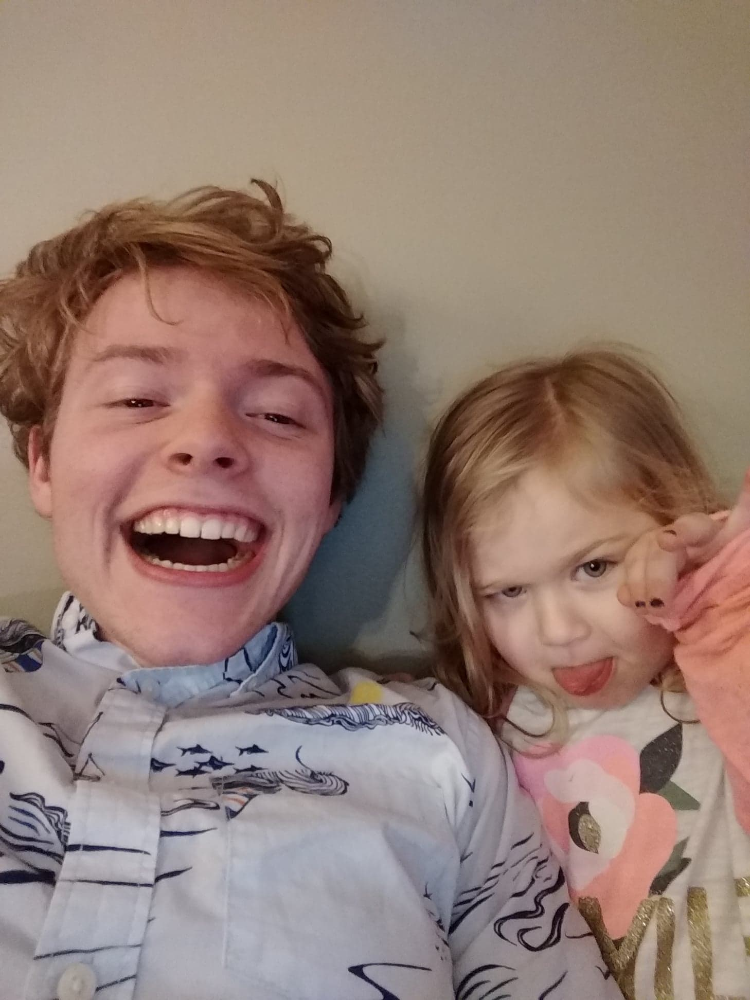
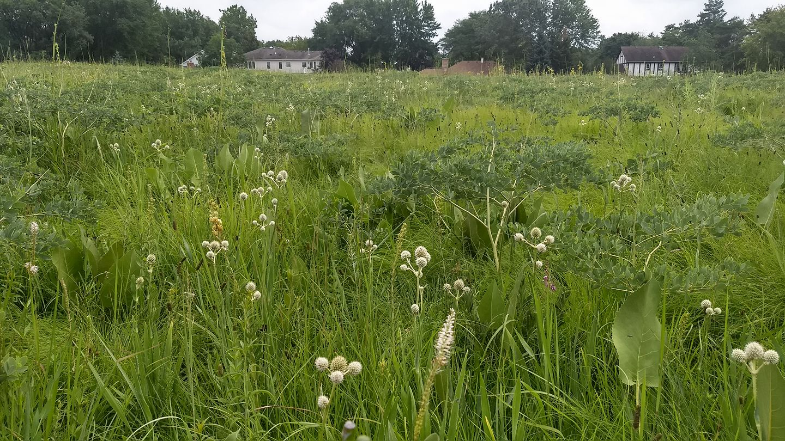
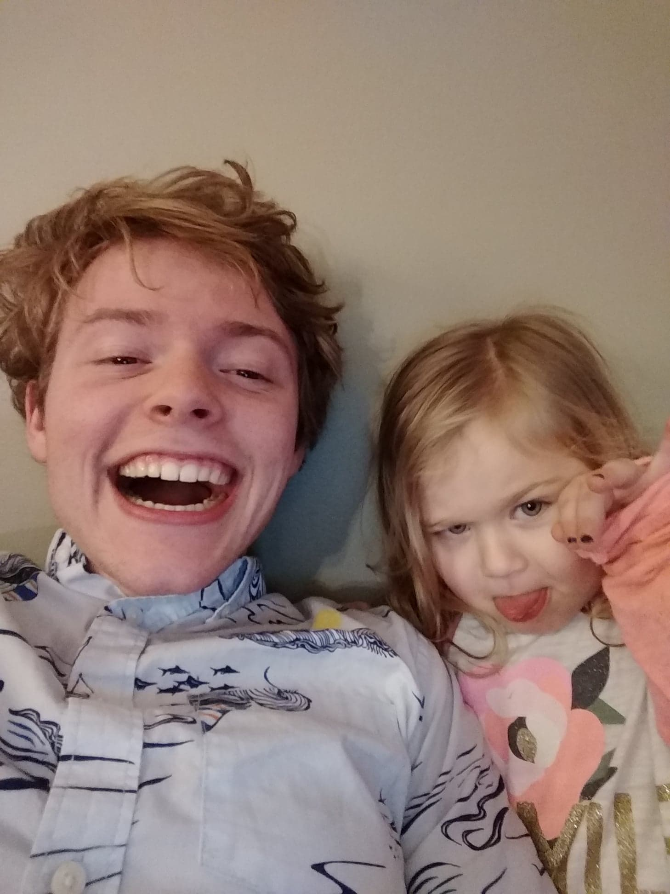
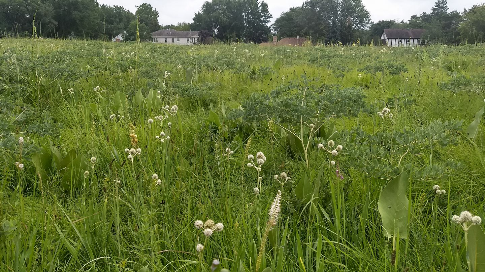

Who Am I?

Hello! My name is Aaron. I'm a Senior at Lawrence University, studying Economics, Statistics, and Computer Science in balance with my passion for environmental stewardship. Clean code, clean homework, and clean ecosystems! In my spare time I've been learning HTML, CSS, and JavaScript to constantly improve my skills in marketing myself and learning how the web works. As a consequence, I am constantly a work in progress. I also play a fair amount of video games, mainly Overwatch, and going on hikes/jogs through natural parks and forests, practicing my identification skills for the variety of plants I've befriended in the Midwestern ecosystem.
This website is intended for two big reasons. First is to provide a casual, constantly-updating glimpse into my skillsets and ideals for future employers and for possible careers. The second is to give me a project to meaningfully practice and extend more skills. I love the feeling of a clean set of links growing as I do more data analysis projects in R, more Java assignments in Computer Science, and more website projects.